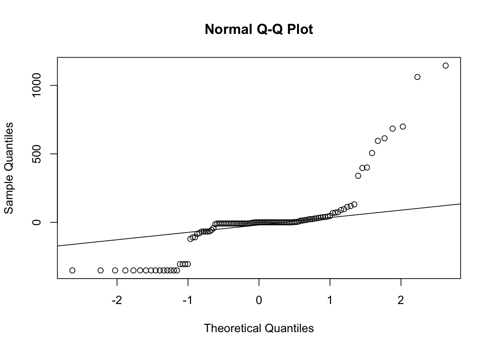

Statistical Data Analysis
Rat Sightings Analysis
ANOVA.
Analysis of variance of the average rat sightings we saw in the ‘rat_boro’ kable output. We can see that there are differences in the average rat sightings across years and boros so we wanted to explore if thiese diferences were statistically significant through a ANOVA test.
rat_sightings =
read_csv ("./data/Rat_Sightings.csv") |>
janitor::clean_names(case = "snake") |>
separate(created_date, sep="/", into = c("month", "day", "year")) |>
separate(year, sep=" ", into = c("year")) |>
filter(borough != "STATEN ISLAND") |>
filter(year %in% c("2019", "2020", "2021", "2022", "2023")) |>
mutate(
borough_id = recode(
borough,
"MANHATTAN" = 1,
"BRONX" =2,
"BROOKLYN"=3,
"QUEENS"= 4)) |>
mutate(
month = as.numeric(month),
year = as.numeric(year)
) |>
select(unique_key, month, day, year, location_type, incident_zip, borough, location, borough_id) |>
mutate(
borough = str_to_sentence(borough)
)
rat_sightings_agg = rat_sightings |>
group_by(year, borough, month) |>
filter(borough != "Unspecified") %>%
summarise(count = n())
anova_result = aov(count ~ factor(year) * factor(borough), data = rat_sightings_agg)
broom::tidy(anova_result)## # A tibble: 4 × 6
## term df sumsq meansq statistic p.value
## <chr> <dbl> <dbl> <dbl> <dbl> <dbl>
## 1 factor(year) 4 2185688. 546422. 33.0 1.86e-21
## 2 factor(borough) 3 6927195. 2309065. 139. 3.02e-50
## 3 factor(year):factor(borough) 12 548327. 45694. 2.76 1.66e- 3
## 4 Residuals 216 3579973. 16574. NA NAanova_result_no_interaction = aov(count ~ factor(year) + factor(borough), data = rat_sightings_agg)
broom::tidy(anova_result_no_interaction)## # A tibble: 3 × 6
## term df sumsq meansq statistic p.value
## <chr> <dbl> <dbl> <dbl> <dbl> <dbl>
## 1 factor(year) 4 2185688. 546422. 30.2 3.72e-20
## 2 factor(borough) 3 6927195. 2309065. 128. 1.63e-48
## 3 Residuals 228 4128300. 18107. NA NAWe want to check the assumptions for the ANOVA models ran above. There are three assumptions that should be met when computing an ANOVA:
-The response variable must be quantitative- This is met since the response variable of count of rat sightings is quantitative. -The variance between the groups of average rat sightings by borough and by year should be similar and in this case they are. -Observations should be independent of one another- which we are assuming is satisfied. -The distribution of values within each group of rat sightings by borough is normally distributed which we can see in some of the plots. We can also check the normality of residuals in the below code. From the Normal Q-Q plot of both model residuals the points are quite close to the fitted diagonal line. We also conducted Shapiro-Wilk tests for normality of residuals for both models and with a null hypothesis that the residuals follow a normal distribution and an alternative hypothesis that the residuals does not follow a normal distribution. The p-value for the no interaction model is 0.2694 and the p-value for the interaction model is 0.03883. At a 5% level of significance we can conclude the residuals of the interaction model follow a normal distribution but the residuals for the no interaction model do not follow a normal distribution. ###Checking assumptions of ANOVA
# Extract residuals for the interaction model
residuals_interaction <- residuals(anova_result)
# Check normality of residuals for the interaction model
qqnorm(anova_result$residuals)
qqline(anova_result$residuals)
# Shapiro-Wilk test for normality
shapiro.test(anova_result$residuals)##
## Shapiro-Wilk normality test
##
## data: anova_result$residuals
## W = 0.98759, p-value = 0.03883# Extract residuals for the interaction model
residuals_no_interaction <- residuals(anova_result_no_interaction)
# Check normality of residuals for the model without interaction
qqnorm(residuals_no_interaction)
qqline(residuals_no_interaction)
# Shapiro-Wilk test for normality
shapiro.test(anova_result_no_interaction$residuals)##
## Shapiro-Wilk normality test
##
## data: anova_result_no_interaction$residuals
## W = 0.99244, p-value = 0.2694# Shapiro-Wilk test for normality
shapiro.test(residuals_no_interaction)##
## Shapiro-Wilk normality test
##
## data: residuals_no_interaction
## W = 0.99244, p-value = 0.2694# Check homoscedasticity for the interaction model
plot(anova_result$model)
# Check homoscedasticity for the model without interaction
plot(anova_result_no_interaction$model)
From the ANOVA test for the model with the interaction which is the model that checked all of the assumptions of an ANOVA test above we can see from the p-value of being <0.001 at 5% level of significance we can reject the null hypotheses and conclude that at least one of the average rat sightings by borough and by year are statistically different.
Waste Tonnage Analysis
The dataset was cleaned to ensure accurate and relevant data for analysis. We performed the following steps:
- Standardized column names
- Parsed and converted date information
- Filtered data for the years 2022 and 2023
- Calculated total organics by summing relevant columns
- Aggregated waste tonnage by borough and date
ANOVA for Differences in Waste Tonnage Across Boroughs
We conducted one-way ANOVA tests to compare the total organic and refuse waste tonnage across boroughs. Before interpreting the ANOVA results, we checked the assumptions of normality and homogeneity of variances.
- Homogeneity of variances, the assumption that the variance within each group is the same, was checked using Bartlett’s test. A non-significant result (p > 0.05) would suggest that this assumption holds true.
- For normality, we examined the residuals of our ANOVA model. The residuals should follow a normal distribution for the ANOVA results to be valid. This was checked using Q-Q plots, where a close alignment of the residuals with the reference line would indicate normality.
ANOVA Test for Organic Waste Tonnage
anova_model_organics <- aov(total_organics ~ borough, data = waste_tonnage)
anova_result_organics <- broom::tidy(anova_model_organics)ANOVA Test for Refuse Waste Tonnage
anova_model_refuse <- aov(total_refuse ~ borough, data = waste_tonnage)
anova_result_refuse <- broom::tidy(anova_model_refuse)Assumption Checks
# Normality check with Q-Q plots
qqnorm(anova_model_organics$residuals)
qqline(anova_model_organics$residuals)
qqnorm(anova_model_refuse$residuals)
qqline(anova_model_refuse$residuals)
# Homogeneity of variances check with Bartlett's test
bartlett_test_organics <- bartlett.test(total_organics ~ borough, data = waste_tonnage)
bartlett_test_refuse <- bartlett.test(total_refuse ~ borough, data = waste_tonnage)# Output ANOVA results
list(anova_result_organics, anova_result_refuse)## [[1]]
## # A tibble: 2 × 6
## term df sumsq meansq statistic p.value
## <chr> <dbl> <dbl> <dbl> <dbl> <dbl>
## 1 borough 4 2701708. 675427. 10.5 0.000000296
## 2 Residuals 112 7209968. 64375. NA NA
##
## [[2]]
## # A tibble: 2 × 6
## term df sumsq meansq statistic p.value
## <chr> <dbl> <dbl> <dbl> <dbl> <dbl>
## 1 borough 4 37843283363. 9460820841. 82.1 2.19e-32
## 2 Residuals 112 12913077883. 115295338. NA NAThe one-way ANOVA test was performed to assess the differences in organic waste tonnage among the boroughs. The ANOVA test revealed statistically significant differences in organic waste tonnage among the boroughs (F(4, 112) = 10.5, p < 0.05).
A one-way ANOVA test was conducted to examine the differences in refuse waste tonnage among the boroughs.The ANOVA test revealed statistically significant differences in refuse waste tonnage among the boroughs (F(4, 112) = 82.1, p < 0.001).
Linear Model
The rat sightings data set was cleaned to show the number of rat sightings for 2022 and 2023 by year, month, and borough. Then, the rat sightings data was merged with the waste tonnage data by year, month, and borough.
rat_count_month <- rat_sightings %>%
select(unique_key, month, year, borough, borough_id) %>%
filter(year %in% c("2022", "2023"), borough != "Unspecified") %>%
group_by(borough, borough_id, year, month) %>%
summarise(sighting_n = n_distinct(unique_key))
rat_waste_month_merged = left_join(rat_count_month, waste_tonnage, by = c("borough_id", "month", "year", "borough"))%>%
mutate(month=as.character(month),
year=as.character(year))Linear Regression model for the number of rat sightings by total refuse, borough, year, and month.
rat_sightings_fit <- lm(sighting_n ~ total_refuse + borough + year, data = rat_waste_month_merged)y(Number of Rat Sightings) = Intercept + Total Waste (x1) + Borough (x2) + Year (x3)
rat_sightings_fit |>
broom::glance()|>
knitr::kable(digits = 3)| r.squared | adj.r.squared | sigma | statistic | p.value | df | logLik | AIC | BIC | deviance | df.residual | nobs |
|---|---|---|---|---|---|---|---|---|---|---|---|
| 0.752 | 0.737 | 129.797 | 52.096 | 0 | 5 | -575.109 | 1164.219 | 1181.871 | 1448862 | 86 | 92 |
With an R2 = 0.752, the independent variables (total waste, borough, year) in this model appear to explain about 75.2.2% of the variance in the dependent variable (number of rat sightings).
rat_sightings_fit|>
broom::tidy() |>
select(term, estimate, std.error, statistic, p.value) |>
mutate(term = str_replace(term, "^borough", "Borough: ")) |>
mutate(term = str_replace(term, "^total_refuse", "Total Waste")) |>
mutate(term = str_replace(term, "^year", "Year: ")) |>
knitr::kable(digits = 6)| term | estimate | std.error | statistic | p.value |
|---|---|---|---|---|
| (Intercept) | 137.557270 | 63.639726 | 2.161500 | 0.033436 |
| Total Waste | 0.005532 | 0.001618 | 3.418234 | 0.000965 |
| Borough: Brooklyn | 343.724245 | 66.843236 | 5.142244 | 0.000002 |
| Borough: Manhattan | 275.870898 | 38.331153 | 7.197042 | 0.000000 |
| Borough: Queens | -101.084602 | 54.651270 | -1.849629 | 0.067802 |
| Year: 2023 | 15.873828 | 27.867071 | 0.569627 | 0.570416 |
Interpretations:
Total Waste - For every unit increase in total waste, the number of rat sightings increased by 0.005532, adjusting for borough, and year. At a 5% level of significance, there was a statistically significant relationship between the number of rat sightings and the total waste (P<0.001).
Year -There was not a statistically significant relationship between the number of rat sightings and year at the 5% level of significance (P=0.57), adjusting for total waste and year.
Borough:
Queens: The number of rat sightings in Queens was not significantly different from the numnber of rat sightings in the Bronx at the 5% level of significance (P=0.007), adjusting for total waste and year.
Manhattan: The number of rat sightings in Manhattan was significantly different from the number of rat sightings in the Bronx at the 5% level of significance (P<0.001), adjusting for total waste and year.
Brooklyn: The number of rat sightings in Manhattan was significantly different from the number of rat sightings in the Bronx at the 5% level of significance (P<0.001), adjusting for total waste and year.